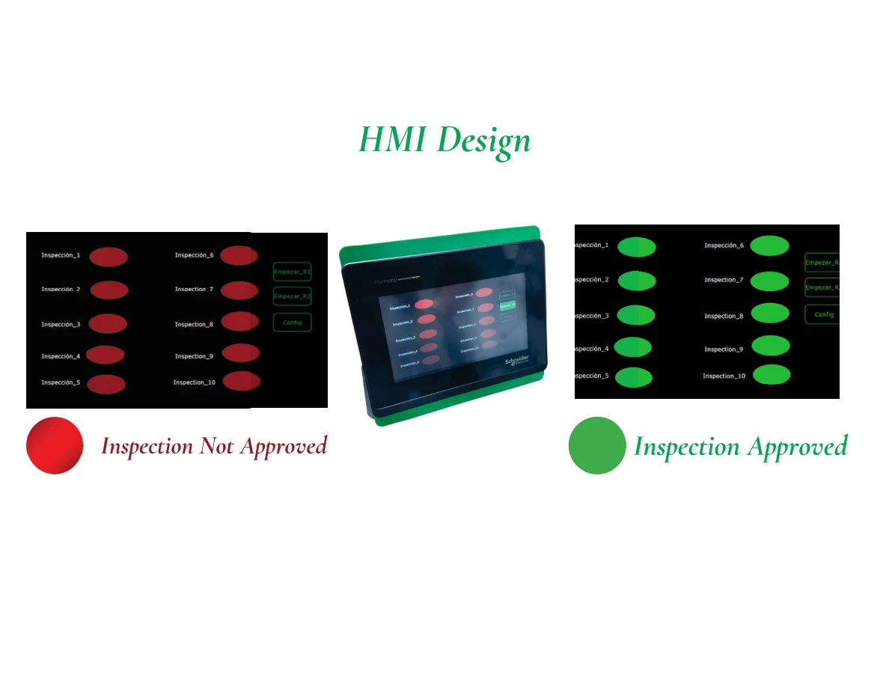

Evaluating a robotic inspection concept.
Worked on an academic inspection cell combining a Lexium cobot, camera, M262 PLC and HMI, with physical testing and digital-twin evaluation.
Physical demonstration / proposalInside the project.
Selected visuals from the academic team’s original presentation. Captions distinguish physical hardware from simulation.


The challenge
Develop and demonstrate an automated label-inspection sequence for switches, while assessing a proposed workstation layout and investment case.
My contribution
- Worked with the team on the Lexium cobot / M262 PLC inspection sequence and physical demonstration.
- Contributed to inspection sequence programming, camera checks, HMI feedback and coordination of handling and vision.
- Evaluated workflow using a digital twin.
- Prepared technical documentation and stakeholder presentations.
Engineering focus
Evaluate workflow and investment assumptions together before recommending implementation.
Outcome & scope
The final team presentation reports a 34-second robot routine including label detection and successful detection of ten different labels in the academic demonstration. These are project-reported test results, not independently verified production metrics. Financial returns and proposed improvements remain estimates.
Professional experience and academic collaborations are labeled separately. Organization names identify the project context and do not imply endorsement.